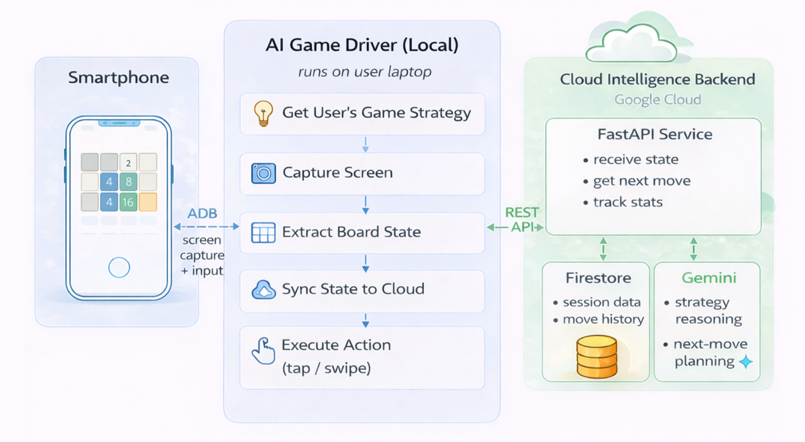

Every game, at its core, asks two essentials of the player: strategy and perception.
Strategy is the mind — knowing when to play aggressively, when to hold back, when to pursue a high-risk reward, and when to protect long-term position. It reflects the player’s judgment, style, and intent. Perception is the bridge between intention and action — the ability to interpret visual information quickly, respond to changes in real time, and translate decisions into precise physical input.
For many people, these two capacities work together almost effortlessly. But for millions of players living with Parkinson's disease, essential tremor, or low vision, perception can become the barrier that strategy alone cannot overcome. The mind remains sharp, the ideas are present, and the desire to play is intact — yet executing precise movements, reacting quickly, or interpreting visual information clearly may become difficult or even impossible. The joy of gaming, and the cognitive stimulation it can provide, becomes less accessible not because of how someone thinks, but because of how their body responds.
This project exists to tear that wall down.
The idea is simple: you bring the strategy, the AI brings the execution. You describe how you want to play — in plain language, in your own words, as detailed or as simple as you like. The system reads the game state, understands the current situation, applies your strategy, and acts on your behalf. You stay in control of the how. The machine handles the doing.
This is not about replacing human players with bots. It is about giving people whose hands shake, whose vision blurs, or whose fine motor skills have changed — the same ability to play their own game that everyone else takes for granted.
This repository demonstrates the idea using 2048, a strategy-driven game with a clear 4×4 grid and a rich set of tactical choices. At the same time, it requires continuous visual interpretation and precise swipe inputs, which are exactly the barriers this system is designed to address.
In this system, a local game driver runs on the user’s computer, connects to an Android phone, and controls the device through ADB. A cloud backend, deployed on Google Cloud Run, receives the current game image or extracted state together with the user’s strategy instructions. The backend then invokes the Google Gemini API to interpret the situation and determine the most appropriate next move under the chosen strategy. Google Firestore is used to maintain lightweight cloud-side data such as session information, game progress, usage records, and move history. The local client executes the returned action in a continuous loop, allowing the user to observe the gameplay, revise the strategy at any time, and let the AI carry out the execution.

The backend is a FastAPI service deployed on Google Cloud Run that uses Google Gemini to plan moves. It also includes a browser-based /playground, allowing users to quickly try the system without running local code or connecting to an Android phone.
This Cloud API gives you:
/playground web page where users can upload board images and try different strategies directly in the browser — no phone, no ADB, and no local setup requiredThe local client runs on your computer and serves as the execution side of the system. It connects to the Android device through ADB, captures the current game screen, extracts the relevant state, sends that information together with your strategy to the cloud API, receives the next action, and executes it automatically on the device.
The local game driver provides:
We would like to thank Aidan Lok and George S Harris for their past collaboration on an earlier prototype of this project.